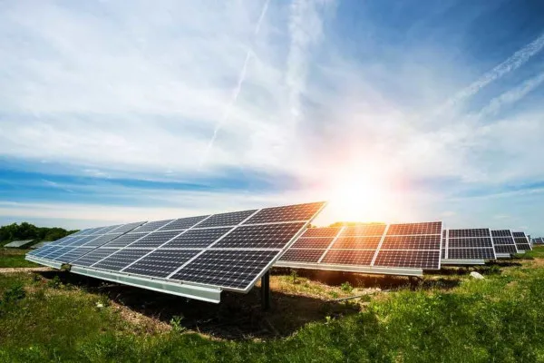

Introdução
A energia limpa tem como maior contribuição a utilização de fontes renováveis, é produzida sem a emissão de poluentes, com o mínimo possível de prejuízo á natureza. Isso porque, não causa impactos na atmosfera como por exemplo, o aumento de dióxido de carbono (CO2), não emite gases de efeito estufa e não possui nenhum fator de agravamento no aquecimento global. Algumas dessas energias limpas são: Energia Eólica, Energia Solar e Energia Maremotriz. Que serão aprofundadas, com maior ênfase em implantação de sistemas de gerenciamento dessas energias para redução de consumo. A crescente preocupação com o ambiente e as questões da necessidade á se perpetuar em uma economia sustentável, revela-se da necessidade de buscar fontes de energia, que tenham menos impactos no ambiente e na economia. E para isso existem os sistemas de gerenciamento de energia. A adoção de um sistema de gerenciamento de energia tem se tornando imprescindível em empresas de todos os tipos de segmentos. Isso porque, com base em ferramentas por meio da tecnologia de dados, é acessível constatar pontos de desperdício, otimizar a relação de demanda e contratação, além de gerar economia de recursos naturais e reduzir despesas
Energia Solar
A energia solar é a energia obtida a partir da luz e do calor do sol. É uma fonte de energia renovável e sustentável, que não emite gases de efeito estufa e não gera resíduos tóxicos. A energia solar pode ser aproveitada por meio de painéis solares, que transformam a luz solar em energia elétrica.
 Saiba MaisEnergia Eólica
A energia eólica é a energia obtida a partir do vento. É outra fonte de energia renovável e sustentável, que também não emite gases de efeito estufa e não gera resíduos tóxicos. A energia eólica pode ser aproveitada por meio de turbinas eólicas, que transformam a energia cinética do vento em energia elétrica.
Saiba MaisEnergia Maremotriz
Energia maremotriz, ou energia das marés, é o modo de geração de energia por meio do movimento das marés.
Saiba MaisSistemas de gerenciamento de energia
Gerenciador de energia é um sistema composto de equipamentos e dispositivo de medições que realiza a monitoração e o controle de processos buscando otimizar o consumo dos insumos energéticos e utilidades de forma automática sem interrupção de produção ou prejuízo no conforto ambiental. Pode-se citar como as principais aplicações: Eliminação de desperdícios; Aumento da eficiência; Mudança nos padrões de consumo; Monitoramento das Concessionárias de Energia; Elaboração de rateios com alta precisão; Controle de cargas; Controle do fator de potência; Conhecimento das sazonalidades do consumo; Determinação do custo específico, consumo específico e custo de produção (por setores e períodos). Os sistemas de gerenciamento de energia são implantados para monitorar as grandezas elétricas e o perfil histórico de determinados lugares ou unidades que fazem o consumo de energia. Sua instalação geralmente é feita pelas multas de ultrapassagem de gastos, e consequentemente o sistema consegue diminuir o valor de consumo e dos gastos, através da captação que é feita. Segundo o BEN (2013), o gerenciamento de energia e a conservação tem tido um grande destaque, isso porque, possui uma grande rigidez nos critérios de faturamento e nas tarifas de energia elétrica, e sua aplicação á quase totalidade dos processos industriais.